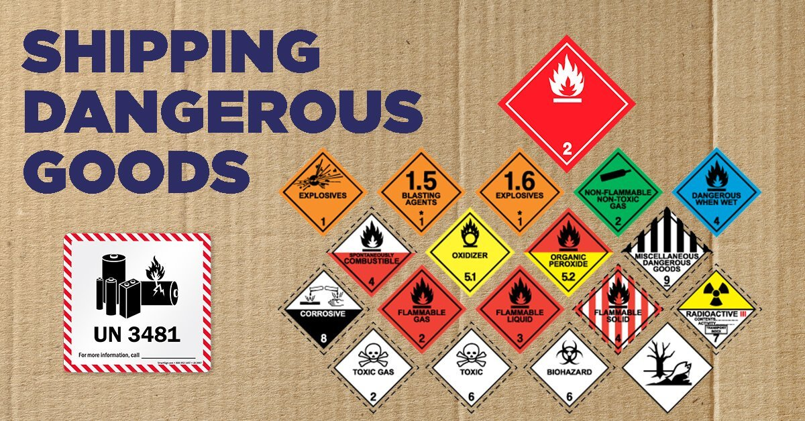

สินค้าอันตราย (Dangerous Goods) หมายถึง สิ่งของ หรือวัตถุที่มีคุณสมบัติทางเคมีหรือทางกายภาพโดยตัวของมันเอง หรือเมื่อสัมผัสกับสารอื่น (อากาศ หรือ น้ำ ฯลฯ) ทำให้เกิดอันตรายต่อมนุษย์ ทรัพย์สิน หรือต่อสภาพแวดล้อม สหประชาชาติ (United Nations) ได้จัดทำข้อแนะนำในการขนส่งสินค้าอันตราย (Recommendations on the Transport of Dangerous Goods) มีรายละเอียดเกี่ยวกับ
– การจำแนกประเภทสินค้าอันตราย (Classification).
– การบรรจุหีบห่อ (Packaging).
– การติดป้าย, ฉลาก (Labelling)
– การขนส่งสินค้าอันตรายที่บรรจุในถัง (Tank Transport)
ในข้อแนะนำนี้ได้มีบัญชีวัตถุหรือสารอันตราย ซึ่งส่วนใหญ่ทำการขนส่งกันเป็นประจำโดยสหประชาชาติ ได้กำหนดตัวเลขสี่หลักเรียกว่า UN Number (UN NO.) ใช้แทนชื่อสินค้าแต่ละตัว
องค์การทางทะเลระหว่างประเทศ (International Maritime Organization) หรือ IMO ได้จัดทำข้อบังคับและข้อที่ควรปฏิบัติระหว่างประเทศ เพื่อให้เกิดความปลอดภัยในการขนส่งสินค้าอันตรายทางทะเล เรียกว่า International Maritime Dangerous Goods Code หรือ IMDG-Code IMDG-Code ได้กำหนดกฎเกณฑ์ไว้เป็นการเฉพาะ ในเรื่องของ
– การจำแนกประเภทสินค้าอันตราย (Classification).
– การแสดงสินค้าอันตราย โดยใช้เครื่องหมายและการปิดฉลาก (Identification, Marking, Labelling and Placarding)
– เอกสารต่างๆ ที่เกี่ยวข้อง (Documentation)
– การบรรจุหีบห่อ (Packaging)
– การแยกเก็บ (Segregation)
– สินค้าอันตรายที่ขนส่งในลักษณะสินค้าทั่วไป (General Cargo)
– สินค้าอันตรายในระบบตู้สินค้า (Containerized Cargo)
– สินค้าอันตรายที่ขนส่งในลักษณะสินค้ากอง (Bulk Transport)
– สารที่ทำให้เกิดมลภาวะทางทะเล (Marine Pollutant).
ใน IMDG-Code ได้เสนอแนะแนวทางแผนจัดการฉุกเฉินของสินค้าอันตรายแต่ละชนิด (Emergency Schedules หรือ EmS) และการปฐมพยาบาล (Medical First Aid Guide) หรือ MFAG สินค้าอันตราย (Dangerous Goods) 9 ประเภทดังนี้
ประเภทที่ 1 วัตถุระเบิด
ประเภทที่ 1 วัตถุระเบิด (Explosives) หมายถึง วัตถุที่สามารถระเบิดได้ เมื่อได้รับความร้อน ประกายไฟ เปลวไฟ หรือเมื่อเกิดการเสียดสี กระทบกระเทือน หรือถูกกระทำโดยตัวจุดระเบิด แยกเป็น 5 ประเภทย่อย คือ
- วัตถุหรือสิ่งของที่ก่อให้เกิดอันตรายจากการระเบิดอย่างรุนแรงฉับพลัน
- วัตถุหรือสิ่งของซึ่งอาจก่ออันตรายโดยการกระจายของสะเก็ดระเบิดแต่มิใช่โดยระเบิดอย่างรุนแรงฉับพลัน
- วัตถุหรือสิ่งของที่อาจก่ออันตรายโดยเปลวไฟพร้อมกับอันตรายจากการระเบิดบ้างเล็กน้อย แต่มิใช่จากการระเบิดอย่างรุนแรงฉับพลัน
- วัตถุหรือสิ่งของที่ไม่ก่ออันตรายมากนักอาจติดไฟได้หรือประทุได้ในระหว่างการขนส่ง
- วัตถุหรือสิ่งของที่ไม่ไวต่อการระเบิด จนโอกาสที่จะระเบิดนั้นมีน้อย หรือการเปลี่ยนขั้นจากการลุกไหม้ เป็นการจุดระเบิดมีน้อยในขั้นการขนส่งปกติ แต่ถ้ามีการขนส่งเป็นจำนวนมากก็ทำให้การไหม้นั้น นำไปสู่การระเบิดได้
- วัตถุซึ่งไม่ไวเป็นอย่างยิ่งต่อการเกิดอันตรายโดยการระเบิด โอกาสที่จะเกิดอุบัติเหตุหรือการกระจายของวัตถุมีน้อยมาก ตัวอย่าง เช่น ดินปืน, กระสุนปืน, ลูกระเบิด, Nitrocellulose, Liquid Nitroglycerine, Dynamite, Ammonium dichromate, Ammonium nitrate ที่มีส่วนผสมของวัตถุที่เผาไหม้ได้เกิน 0.2% (UN.0222, 0223)
ประเภทที่ 2 ก๊าซ
ประเภทที่ 2 ก๊าซ (Gases) หมายถึง สารที่อุณหภูมิ 50 องศาเซลเซียส มีความดันไอมากกว่า 300 กิโลปาสกาล หรือมีสภาพเป็นก๊าซอย่างสมบูรณ์ที่อุณหภูมิ 20 องศาเซลเซียส และมีความดัน 101.3 กิโลปาสกาล ได้แก่ ก๊าซอัด ก๊าซพิษ ก๊าซในสภาพของเหลว ก๊าซในสภาพของเหลวอุณหภูมิต่ำ และรวมถึงก๊าซที่ละลายในสารละลายภายใต้ความดัน เมื่อเกิดการรั่วไหลสามารถก่อให้เกิดอันตรายจากการลุกติดไฟ และ/หรือเป็นพิษ และแทนที่ออกซิเจนในอากาศ แบ่งเป็น 3 กลุ่มย่อย ดังนี้
-
ก๊าซไวไฟ (Flammable Gases) หมายถึง ก๊าซที่อุณหภูมิ 20 องศาเซลเซียสและมีความดัน 101.3 กิโลปาสกาล สามารถติดไฟไดเมื่อผสมกับอากาศ 13 เปอร์เซ็นต์ หรือต่ำกว่าโดยปริมาตร หรือมีช่วงกว้างที่สามารถติดไฟได้ 12 เปอร์เซ็นต์ขึ้นไปเมื่อผสมกับอากาศโดยไม่คำนึงถึงความเข้มข้นต่ำสุดของการผสม โดยปกติก๊าซไวไฟหนักกว่าอากาศ ตัวอย่างของก๊าซกลุ่มนี้ เช่น อะเซทิลีน ก๊าซหุงต้มหรือก๊าซแอลพีจี .
-
ก๊าซไม่ไวไฟและไม่เป็นพิษ (Non-flammable Non-toxic Gases) หมายถึง ก๊าซที่มีความดันไม่น้อยกว่า 280 กิโลปาสกาล ที่อุณหภูมิ 20 องศาเซลเซียส หรืออยู่ในสภาพของเหลวอุณหภูมิต่ำ ส่วนใหญ่เป็นก๊าซหนักกว่าอากาศ ไม่ติดไฟและไม่เป็นพิษ หรือแทนที่ออกซิเจนในอากาศและทำให้เกิดสภาวะขาดแคลนออกซิเจนได้ ตัวอย่างของก๊าซกลุ่มนี้ เช่น ไนโตรเจน คาร์บอนไดออกไซด์ อาร์กอน เป็นต้น.
-
ก๊าซพิษ (Poison Gases) หมายถึง ก๊าซที่มีคุณสมบัติเป็นอันตรายต่อสุขภาพหรือถึงแก่ชีวิตได้จากการหายใจ โดยส่วนใหญ่หนักกว่าอากาศ มีกลิ่นระคายเคือง ตัวอย่างของก๊าซในกลุ่มนี้ เช่น คลอรีน เมทิลโบรไมด์ เป็นต้น
ประเภทที่ 3 ของเหลวไวไฟ
ประเภทที่ 3 ของเหลวไวไฟ (Flammable liquids) หมายถึง ของเหลว หรือของเหลวผสมที่มีจุดวาบไฟ (Flash Point) ไม่เกิน 60.5 องศาเซลเซียสจากการทดสอบด้วยวิธีถ้วยปิด (Closed-cup Test) หรือไม่เกิน 65.6 องศาเซลเซียสจากการทดสอบด้วยวิธีถ้วยเปิด (Opened-cup Test) ไอของเหลวไวไฟพร้อมลุกติดไฟเมื่อมีแหล่งประกายไฟ ตัวอย่างเช่น อะซีโตน น้ำมันเชื้อเพลิง ทินเนอร์ เป็นต้น ของเหลวเหล่านี้จะให้ไอระเหยที่ไวไฟสามารถติดไฟได้ที่อุณหภูมิ 61 องศาเซลเซียส (141° F ) c.c.* หรือที่อุณหภูมิต่ำกว่า แบ่งได้เป็น 3 ประเภท ดังนี้
- ของเหลวที่มีจุดวาบไฟต่ำกว่า -18 องศาเซลเซียส (0° F) c.c.* ได้แก่ กาว (Adhesives) ที่มีของเหลวไวไฟที่มีจุดวาบไฟต่ำผสม, Allyl chloride, Amyl nitrate, Hexane, Methyl formate, Chlorobuthanes, Cychlohexene, Diethylamine, Diethyl ether เป็นต้น.
- ของเหลวที่มีจุดวาบไฟปานกลาง ระหว่าง -18 องศาเซลเซียส (0° F) c.c.* ถึง 23 องศาเซลเซียส c.c.* เช่น กาว (Adhesives) ที่มีจุดวาบไฟปานกลางผสม, Acetone oil, Allyl acetate, Allyl alcohol, Allyl bromide, Isobutyl acetate, Benzene, 2-bromobutane เป็นต้น.
- ของเหลวที่มีจุดวาบไฟสูง โดยมีจุดวาบไฟ 23 องศาเซลเซียส (73° F) c.c.* ถึง 61 องศาเซลเซียส (141° F) c.c.* เช่น Bromobenzene, Buthyl acetate, Chlorobenzene, Cyclohexylamine, Styrene monomer, Ethyl alcohol, Solvent, Xylene เป็นต้น.
หมายเหตุ : c.c. = CLOSED CUP
ประเภทที่ 4 ของแข็งไวไฟ
ประเภทที่ 4 ของแข็งไวไฟ สารที่มีความเสี่ยงต่อการลุกไหม้ได้เอง และสารที่สัมผัสกับน้ำแล้วทำให้เกิดก๊าซไวไฟ (Flammable Solids, Substances Liable to spontaneous combustion, Substances whice in contact with water emit flammable gases) วัตถุที่จัดไว้ในประเภทนี้ เป็นวัตถุที่เป็นอันตราย อาจเป็นสาเหตุให้เกิดอัคคีภัยได้ แบ่งออกเป็น 3 ประเภทย่อย คือ
- ของแข็งไวไฟ (Flammable Solids) ของแข็งประเภทนี้ติดไฟได้ง่าย เป็นอันตรายเมื่ออยู่ใกล้กับแหล่งที่ทำให้เกิดการติดไฟ ได้แก่ บริเวณที่มีประกายไฟและเปลวไฟทำให้เกิดการเผาไหม้อย่างสมบูรณ์ หากมีการเสียดสี ก็สามารถทำให้เกิดไฟไหม้ได้ เช่น ไม้ขีดไฟ, การบูน (Camphor), Celluloid, ผงกำมะถัน, Phosphorus trisulfide, Hexamethylenetetramine, เศษยาง ชิ้นส่วนเล็กๆ ของยาง ลักษณะเป็นเม็ด หรือผงผงอลูมิเนียม (ชนิดเคลือบ) เป็นต้น.
- วัตถุที่อาจจะลุกไหม้ได้เอง (Substances Liable to Spontaneous Combustion) เป็นของแข็งที่สามารถให้ความร้อนและลุกไหม้ได้เอง หรือให้ความร้อนสูงเมื่อสัมผัสกับอากาศทำให้เกิดการลุกไหม้ได้ เช่น Aluminum alkyl, Activated carbon, Carbon black, Potassium hydrosulfite (anhydrous), Sodium sulfide (anhydrous), ผงอลูมิเนียม (ชนิดpyrophoric) เป็นต้น.
- วัตถุที่สัมผัสกับน้ำแล้วให้ก๊าซไวไฟ (Substances whice in contact with water emit flammablegases) วัตถุนี้เมื่อสัมผัสกับน้ำแล้วให้ก๊าซไวไฟในปริมาณที่เป็นอันตราย ในบางกรณีก๊าซนี้สามารถจุดติดไฟได้เอง เช่น โลหะผสม (Alkali-earth metal), Aluminum carbide, Barium, Calcium, Calcium silicide, Phosphorus pentasulphide (ชนิดปราศจากฟอสฟอรัสขาวหรือเหลือง) จะใช้สัญลักษณ์ประเภท 4.3 และ 4.1.
หมายเหตุ : วัตถุที่เป็น ชนิด pyrophoric เช่น ของแข็งหรือของเหลวใดๆ ที่สามารถจุดติดไฟได้เองในบรรยากาศที่มีอุณหภูมิประมาณ 54.4 องศาเซลเซียส
ประเภทที่ 5 วัตถุออกซิไดซ์และวัตถุอินทรีย์เปอร์ออกไซด์
ประเภทที่ 5 วัตถุออกซิไดซ์และวัตถุอินทรีย์เปอร์ออกไซด์ (Oxidizing substances and Organic peroxides) แยกเป็น 2 ประเภทย่อย คือ
-
วัตถุออกซิไดซ์ (Oxidizing substances) หมายถึงวัตถุที่สามารถให้ออกซิเจนออกมาโดยที่วัตถุนี้ไม่จำเป็นต้องเกิดการ เผาไหม้หรือเป็นวัตถุที่ทำให้เกิดขบวนการ oxidationในลักษณะที่คล้ายกันทำให้เพิ่มความเสี่ยงต่อการเกิดไฟไหม้ต่อวัตถุ อื่นที่วางไว้ใกล้เคียง และมีความรุนแรงยิ่งขึ้น เช่น Aluminum nitrate, Ammonium nitrate ชนิด A (UN 2067, 2068, 2059, 2070, 2426), ผงฟอกขาว (Bleaching powder), Calcium chlorate, Calcium chloride, Calcium hypochloride (solid), Calcium hypochloride (solution), Chromic nitrate, Chromium nitrate, Hydrogen peroxide solution 8-20%, Sodium nitrate เป็นต้น วัตถุออกซิไดซ์บางชนิดมีคุณสมบัติที่สำคัญอื่นๆ ด้วยเช่น Barium chlorate, Barium bromate, Barium nitrate, Chromium trioxide (anhydrous), Lead chlorate, Bromine pentafluoride, Bromine trifluoride.
-
วัตถุอินทรีย์เปอร์ออกไซด์ (Organic peroxides) เป็นวัตถุอินทรีย์ที่มีโครงสร้างออกซิเจน 2 ตัว และอาจถือได้ว่าเป็นอนุพันธ์ของ Hydrogen peroxide ซึ่งอะตอมของ Hydrogen 1 หรือทั้ง 2 อะตอม ถูกแทนที่ด้วย อนุมูลของสารอินทรีย์ วัตถุนี้ไม่เสถียรสามารถสลายตัวให้ความร้อนรวดเร็วได้ด้วยตัวเองและอาจมี คุณสมบัติอย่างใดอย่างหนึ่งหรือหลายอย่างดังต่อไปนี้
– แนวโน้มที่จะระเบิดสลายตัว
– เผาไหม้อย่างรวดเร็ว
– ไวต่อการกระแทก หรือการเสียดสี
– ทำปฏิกิริยากับสารอื่นก่อให้เกิดอันตรายได้
– เป็นอันตรายต่อตา
การที่วัตถุ Organic peroxides มีแนวโน้มที่จะให้ความร้อนออกมาในขณะทีอุณหภูมิในขณะนั้นปกติหรือในขณะที่ ได้รับอุณหภูมิที่เพิ่มขึ้นนั้น การสลายตัวสามารถเกิดจากความร้อน การสัมผัสกับสิ่งสกปรก (เช่น มีการเจือปนของกรด, สารประกอบโลหะหนักหรือพวก amine) เกิดจากการเสียดสี หรือการกระแทก การสลายตัวนี้นำไปสู่อันตราย หรือการไวไฟมีก๊าซหรือไอระเหยต่างๆ ดังนั้น จึงต้องมีการควบคุมในขณะขนส่ง การทำให้เจือจางด้วยตัวทำละลายที่เหมาะสม ตลอดจนควบคุมในเรื่องบรรจุภัณฑ์หีบห่อที่เหมาะสมอีกด้วย ควรหลีกเลี่ยงไม่ให้วัตถุนี้สัมผัสถูกตา เนื่องจากบางชนิดจะทำให้เกิดการบาดเจ็บต่อแก้วตา และกัดเนื้อเยื่อตาและผิวหนังได้ ตัวอย่างวัตถุประเภทนี้ได้แก่ Methyl Ethyl Ketone Peroxide, Cyclohexanone Peroxide, Methyl Isobutyl Ketone Peroxide, Asenyl acetone Peroxide เป็นต้น.
ประเภทที่ 6 วัตถุมีพิษและวัตถุติดเชื้อ
ประเภทที่ 6 วัตถุมีพิษและวัตถุติดเชื้อ (Toxic and Infectious Substances) แยกเป็น 2 ประเภทย่อย คือ
-
วัตถุมีพิษ (Toxic Sustances) วัตถุเหล่านี้อาจทำให้เสียชีวิตหรือทำให้เกิดการเจ็บป่วยอย่างรุนแรงเมื่อ เข้าสู่ร่างกายโดยสัมผัสกับผิวหนัง หรือหายใจ หรือกลืนกินเข้าไป วัตถุมีพิษเกือบทุกชนิดจะให้ก๊าซพิษ เมื่อถูกเผาไหม้หรือได้รับความร้อนก็เกิดการสลายตัวและบางชนิดนั้นนอกจากจะ มีพิษแล้ว ยังมีคุณสมบัติ ที่เป็นอันตรายอื่นๆอีกด้วย ตัวอย่าง Arsenic, Arsenic trioxide, Arsenic trichloride, Arsenic tribromide, Barium cyanide, Chloronitrobenzene, Potassium cyanide, Dichloromethane, Barium chloride, Copper cyanide, Sodium cyanide, Sodiumsilicofluoride, Aniline.
-
วัตถุติดเชื้อ (Infectious Substances ) เป็นวัตถุที่มีเชื้อจุลินทรีย์ (Micro organism) อันเป็นสาเหตุที่ทำให้เกิดโรคในมนุษย์และสัตว์ โดยมีข้อสังเกต 2 ประการคือ
- ประการ ที่ 1 จุลินทรีย์และสิ่งมีชีวิตที่เปลี่ยนแปลงทางพันธุกรรมแล้วไม่เป็นไปตามคำ จำกัดความของวัตถุประเภท 2 ควรจะจัดให้อยู่ในประเภทที่ 9.
- ประการที่ 2 พิษของจุลินทรีย์ (Toxins) ที่ไม่เป็น หรือมีสารติดเชื้อควรพิจารณาให้อยู่ในประเภท 1 กำหนดตาม UN. 3172 ซึ่งเป็น Toxin ที่สกัดจากสิ่งมีชีวิต.
ประเภทที่ 7 วัตถุกัมมันตรังสี
ประเภทที่ 7 วัตถุกัมมันตรังสี (Radioactive material) หมายถึง วัตถุที่สลายตัวแล้วให้รังสีออกมามากกว่า 0.002 ไมโครคิวรีต่อ น้ำหนักของวัตถุนั้น 1 กรัม หรือ 70 k Bq/kg. รังสีนี้มองไม่เห็นด้วยตาเปล่าเราสามารถรับรังสีได้ทั้งภายในและภายนอกร่าง กาย เช่น เมื่ออยู่ในบริเวณที่ใกล้วัตถุกัมมันตรังสีและได้สัมผัสกับรังสีที่ออกมา หรือการรับประทานอาหารที่ปนเปื้อนของสารรังสีเข้าไป คุณสมบัติของวัตถุกัมมันตรังสีมี 2 ลักษณะ คือ
– ให้ความร้อนและทำให้เกิดอันตรายอย่างรุนแรง.
– สามารถแตกตัวให้ไอโซโทป เช่น พลูโตเนียม-238, พลูโตเนียม-239, พลูโตเนียม-241, ยูเรเนียม-233, ยูเรเนียม-235 หรือวัตถุใดๆที่มีสารไอโซโทปเหล่านี้อยู่ จัดเป็นวัตถุกัมมันตรังสี เช่น เรเดียม, ยูเรเนียม เป็นต้น.
ประเภทที่ 8 วัตถุกัดกร่อน
ประเภทที่ 8 วัตถุกัดกร่อน (Corrosives Substances) หมายถึง ของแข็ง หรือของเหลว ซึ่งโดยปฏิกิริยาเคมีมีฤทธิ์กัดกร่อน ทำความเสียหายต่อเนื้อเยื่อของสิ่งมีชีวิตอย่างรุนแรง หรือทำลายสินค้า/ยานพาหนะที่ทำการขนส่งเมื่อเกิดการรั่วไหลของสาร ไอระเหย ของสารประเภทนี้บางชนิดก่อให้เกิดการระคายเคืองต่อจมูกและตา ตัวอย่างเช่นกรดเกลือ กรดกำมะถัน โซเดียมไฮดรอกไซด์ เป็นต้น
ประเภทที่ 9 วัสดุอันตรายเบ็ดเตล็ด
ประเภทที่ 9 วัสดุอันตรายเบ็ดเตล็ด (Miscellaneous Dangerous Substances and Articles) หมายถึง วัตถุและสิ่งของที่มีความเป็นอันตราย ซึ่งไม่จัดอยู่ในประเภทที่ 1 ถึงประเภทที่ 8 และให้รวมถึงสารที่มีอุณหภูมิไม่ต่ำกว่า 100 องศาเซลเซียสในสภาพของเหลว หรือมีอุณหภูมิไม่ต่ำกว่า 240 องศาเซลเซียสในสภาพของแข็ง เช่น ปุ๋ยแอมโมเนียมไนเตรทชนิด B (UN.2071), Asbestos, Zinc hydrosulfite, PBC เป็นต้น